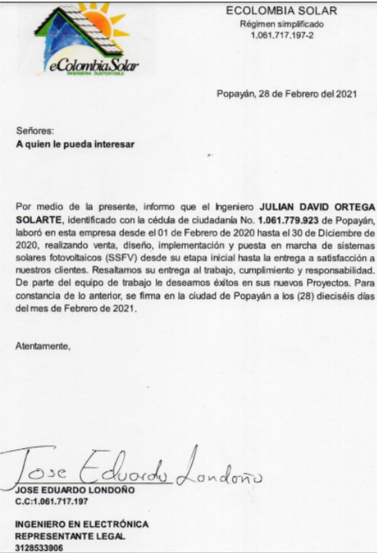
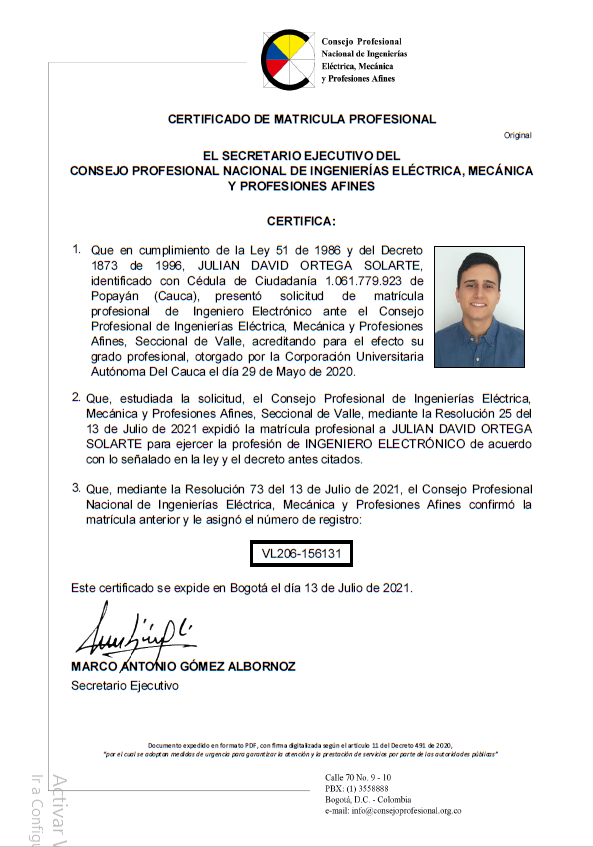
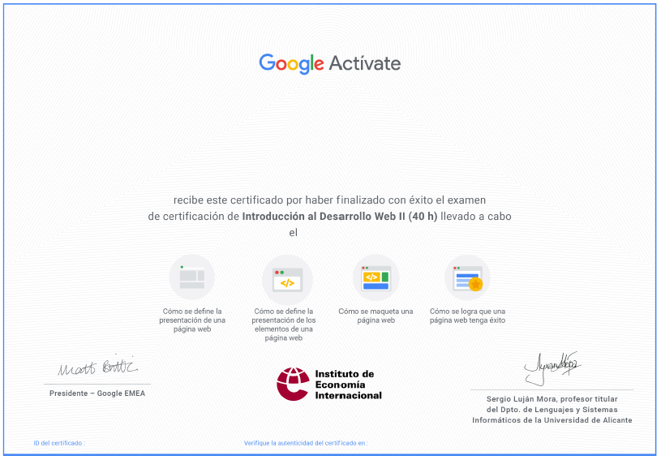
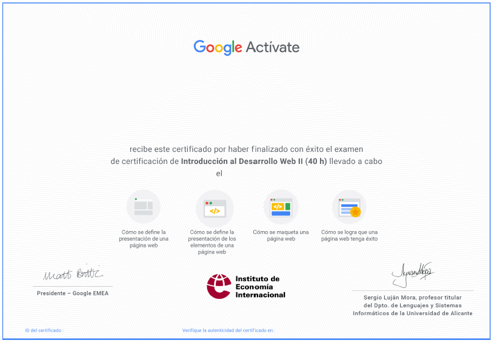

CV JULIAN DAVID ORTEGA SOLARTE
Descripción Personal
Ingeniero electrónico bilingüe en español e inglés, con certificado en tecnologías fotovoltaicas, conocimientos
en matemáticas, física y programación de aplicaciones embebidas, usando microcontroladores como arduino, pic o
raspberry, también en controladores plc como Schneider o logo, además conocimientos en lenguajes de desarrollo
como HTML, Java Script y CSS para el desarrollo de aplicaciones web.
Un profesional capacitado para enfrentar diversos tipos de problemas tecnológicos, creativo, motivado por aprender y
consciente de su compromiso social para el desarrollo de una empresa y su región.
Educación
-
2020--- Ingeniero Electrónico, Popayán-Colombia Universidad autónoma del cauca.
-
2020--- Instalador Sistemas SFV, Popayán-Colombia Escuela Casa Solar.
-
2015--- Dominio del idioma Ingles, Popayán-Colombia Universidad del cauca.
Experiencia Laboral
-
Desde 15/11/2017 al 15/01/2018 (Popayán-Colombia) VIP: Vendedor.
Tareas realizadas: Asesorar en la compra de ropa deportiva como zapatos, camisas, pantalonetas,
-
Desde 01/01/2018 al 11/12/2019 (Popayán-Colombia)
Ventas Hamilton Ortega - Inmobiliaria:Asesor comercial
Tareas realizadas: Asesorar a los futuros compradores de proyectos inmobiliarios para brindarles
la información necesaria y llevar acabo la venta, oficinista de la empresa llevando registro de todos
los inmuebles en arrendamiento, pago de administraciones, aseo, manejar las redes sociales de la empresa,
creando imágenes y videos publicitarios, creador de la página web de la Empresa mediante WordPress.
-
Desde 02/01/2020 al 12/30/2020 (Popayán-Colombia)
Ecolombia Solar - Solar Fotovoltaica: Instalación y mantenimiento de SSFV
Tareas realizadas: Llevar acabo instalaciones de sistemas solares fotovoltaicos residenciales y comerciales
hasta 22 Kw, llevar a cabo mantenimiento de las baterías tipo AGM o de plomo ácido, asistir en procesos de
venta como un ingeniero capacitado con la información necesaria para hacer una cotización correcta.



Habilidades
-
JavaScript
-
Css
-
Html
-
VsCode
-
Matlab
-
arduino
Pasa Tiempos
- Ser Emprendedor
- Hacer Ejercicio
- Salir con amigos
- Ver noticias (youtube)
- Leer
Expectativas
Bueno, quiero seguir estudiando esta carrera y trabajar en ella porque me gusta la programación y la logica,
antes había estudiado electrónica pero el hecho de trabajr desde el computador me favorece mucho porque puedo
invertir mas tiempo en mis emprendimientos, ademas tengo una lesion grave en la rodilla y trabajar
de esta forma es muy favorable para mi, también está el hecho que los sueldos son relativamente altos,
domino el idioma ingles, aún que la falta de practica me haya hecho perder algo de vocabulario, estoy seguro que si
hablo lento con el tiempo voy a recuerar mi nivel alto.


 
